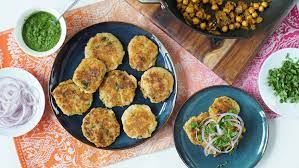

Cholle Allo Tiki

Indian Chole Aloo Tikki
Aloo Tikki Chole or Chole Aloo Tikki is a much-loved chaat dish that can be seen and enjoyed on the streets of North India. The two elements, Aloo Tikki – spiced potato cutlets or patties (sometimes with different fillings) and Chole – the well-known spicy chickpea curry, are quite the match made in heaven. This Aloo Tikki Chole recipe has the addition of yummy chutneys which takes the overall flavor, a notch higher
This is a delicious vegan Indian recipe where vegetables and chickpeas are served over small potato cakes. It works well as a starter for four, or as a vegetarian and vegan main for two. Place the potato cakes on a plate, serve the chickpeas on top, and don't forget the sauces! Recipes for Indian sauces - coriander sauce and tamarind sauce - are on this site. Finally, sprinkle with some fresh coriander leaves and a few thin slices of fresh onion
The Ingredients
- 2 potatoes
- salt and freshly ground black pepper to taste
- 3 and half tablespoons vegetable oil divided
- 1 tablespoon coernstarch
- 1 tablespoon ground ginger
- 1 teaspoon ground cumin
- 1 teaspoon cayenne pepper
- 1 tablespoon chopped fresh cilantro
- ½ teaspoon black peppercorn
- 2 whole cloves
- 1 teaspoon cumin seeds
- 1 onion, chopped
- 2 cloves garlic, grated
- 1 (1/2 inch) piece fresh ginger, grated
- 2 teaspoons curry powder
- 1 teaspoon ground turmeric
- 1 teaspoon tomato paste
- 1 teaspoon water
- 1 tomato, chopped
- 1 (15 ounce) can garbanzo beans, drained
- 1 tablespoon cilantro leaves
Directions
- Place potatoes into a large pot and cover with salted water; bring to a boil. Reduce heat to medium-low and simmer until tender, about 20 minutes. Drain and peel
- Place cooked potatoes into a bowl and add cornstarch, ginger, cumin, cayenne, cilantro, salt, and pepper. Mash together with a fork. Oil your hands with a little vegetable oil and divide the potato mixture into 4 equal portions. Pat each portion into a potato patty about 1/3-inch thick.
- Heat 1 tablespoon vegetable oil in a skillet over medium heat. Fry potato cakes until golden, about 3 minutes on each side. Remove from heat and keep
- Grind peppercorns and cloves with a mortar and pestle.
- Heat the remaining 2 tablespoons vegetable oil in a skillet over medium-high heat. Stir in red chile peppers, cumin, bay leaves. Add onion, ginger, and garlic. Cook and stir until onion is golden, about 5 minutes. Add pepper-clove mixture, curry powder, and turmeric.
- Mix tomato paste with water. Stir diluted tomato paste and tomato into the skillet. Cook over medium heat until the tomato has softened, about 5 minutes. Stir in chickpeas and simmer over low heat for 10 minutes.
- Spoon chickpea sauce over the potato cakes and sprinkle with cilantro leaves.